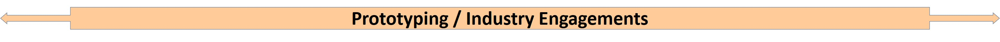
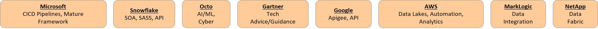
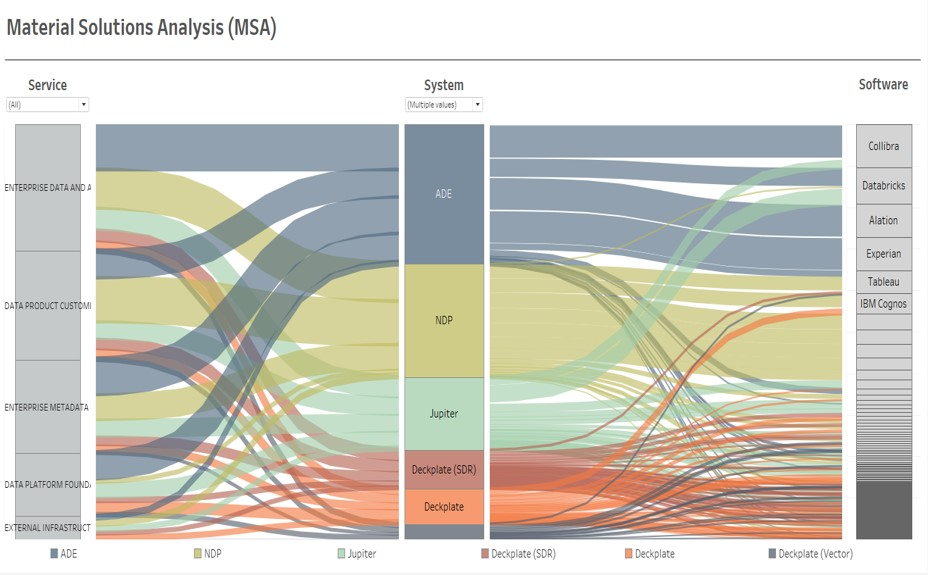
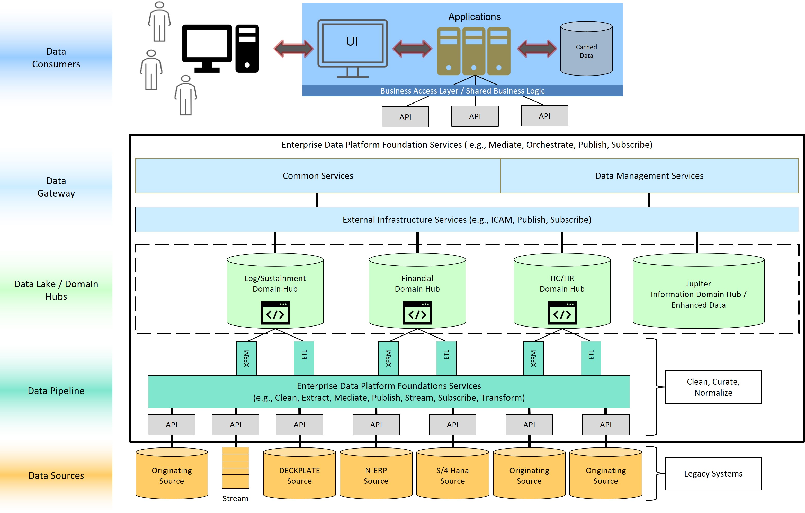

Welcome to Data Services
Data Domain Integrated Environment page!!
« Dats Home Page
BLUF
PEO MLB Data Transformation Services led a Material Solutions Analysis study team to inform and provide one or more recommended material solution approaches for common Domain Data Integration Environment implementation aligned to the DON Data Architecture
MSA was conducted to evaluate effectiveness, cost and risk
MSA recommends the implementation of a set of services, capabilities and architecture in a cloud native environment that allows data domains to expose data to Jupiter for cross data domain analytics
Analysis Conducted
Analysis activities were conducted concurrently across three vectors
Requirements and data environment assessments
- Validated a high-degree of common documented requirements
- Deltas in requirements were generally attributed to specific implementations, but traceable back to a general parent requirement (i.e., security)
- Evaluations of and interviews with Subject Matter Experts of operational data environments within PEO MLB
Industry engagement
- System Integrators: Various approaches and philosophies to outsourcing implementation
- COTS / SaaS providers: Niche capability to Big Data platform providers
- Cloud providers: Various states of mature and available data services and capabilities
Prototyping
- Examined in detail later


Sankey Diagram Showing Relationships Between Systems, Services, and Software Tools

Engineering
Intent
Demonstrate a Proof of Concept (POC) which implements a scalable solution allowing users to access multiple domains from a single service
Deliverables
(code base and configuration files)
Demonstrated and delivered a solution proving multiple data sources could be federated for combined use
Lakehouse
Intent
Design, develop, and architect a production quality data pipeline for ingestion, transformation, and consumption of downstream application through a serving layer
Deliverables
(code base and configuration files)
Include, but not limited to:
- Data pipeline functionality utilizing DaTS COVID-19 data
- Orchestration through step functions
- Data storage built and designed through cloud development kits
- Log-in and security functionalities
- Transformation functionalities
API Framework
Intent
Design, implement, and prototype a Minimal Viable Product (MVP) for a Common API framework
Deliverables
(code base and configuration files)
Include, but not limited to:
- API framework and portal architecture, design, and development
- Discovery service
- Transformation functionalities
- Subscription services
- Natural language processing (NLP) capabilities leveraging the MIT spaCy library
- Authentication services complying with zero trust architecture
- Ingestion service
- Implemented Open API Standards (OAS) Swagger standards
Approach

© PEO MLB Data Transformation Services